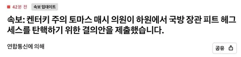

출처: AP 통신
Trump admin live updates: House moves to vote on impeaching Hegseth over Iran war | AP News
토마스 메시(켄터키 4구/공화)의 미 헤그세스 국방장관 탄핵안이 방금 본회의에 상정되었습니다.
토마스 메시 의원은 탄핵안에서 피트 헤그세스 장관을
"국가반역죄 혹은 대역죄(High Treason)에 준하는 범죄"로
탄핵되어야 한다고 규정하고 있습니다.
평소 같으면 상원 공화당이 찬성 안해주겠지만, 중간 선거 말아먹은 지금은 과연???
자 이제 서로 죽여라